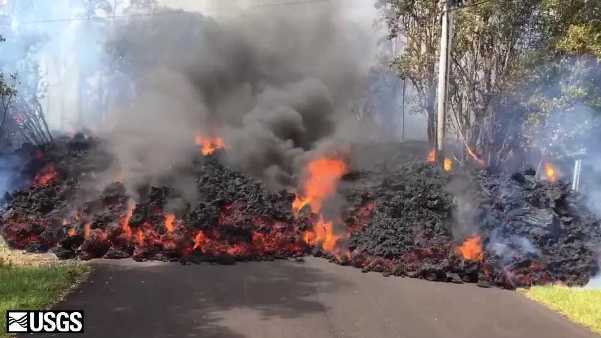
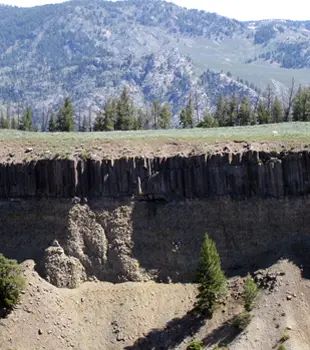
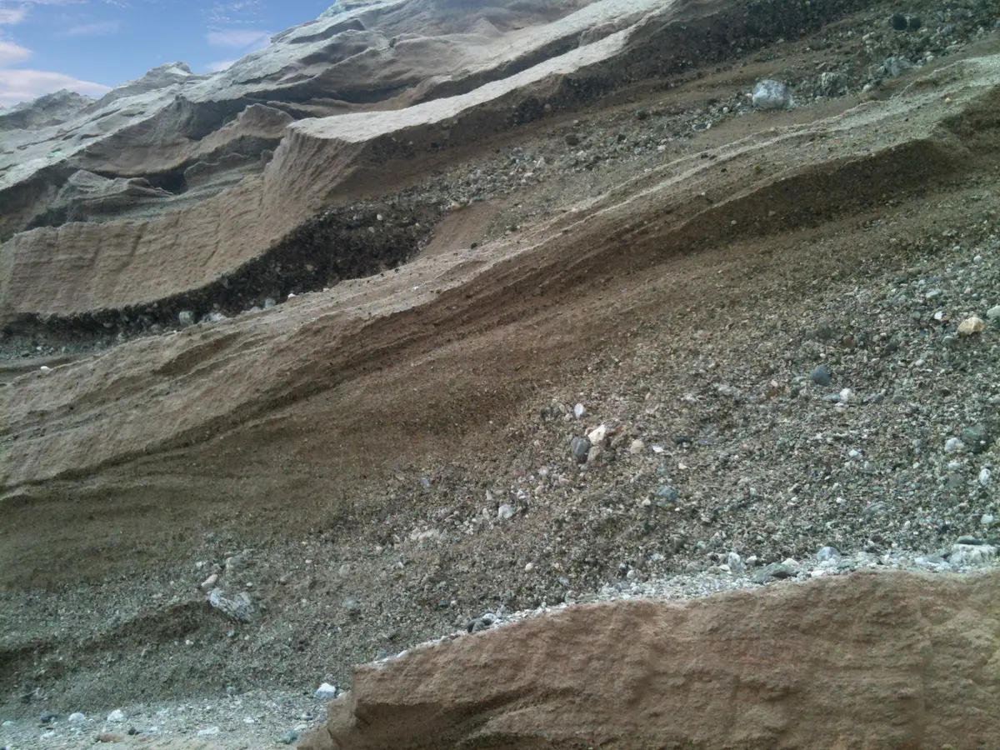
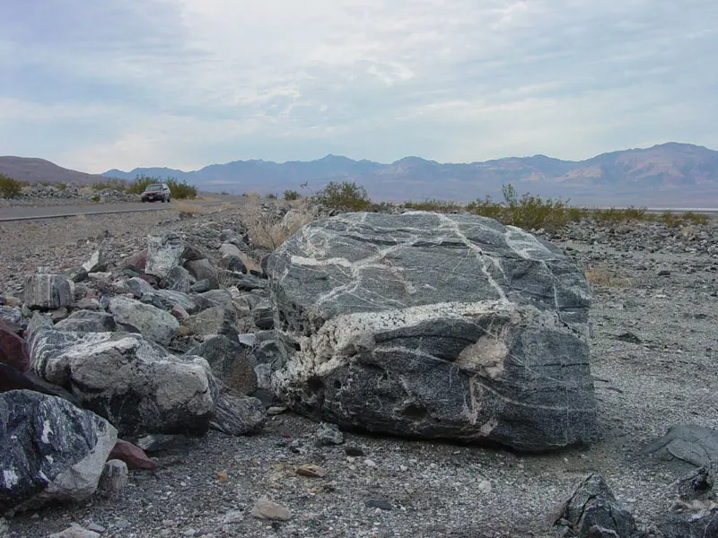
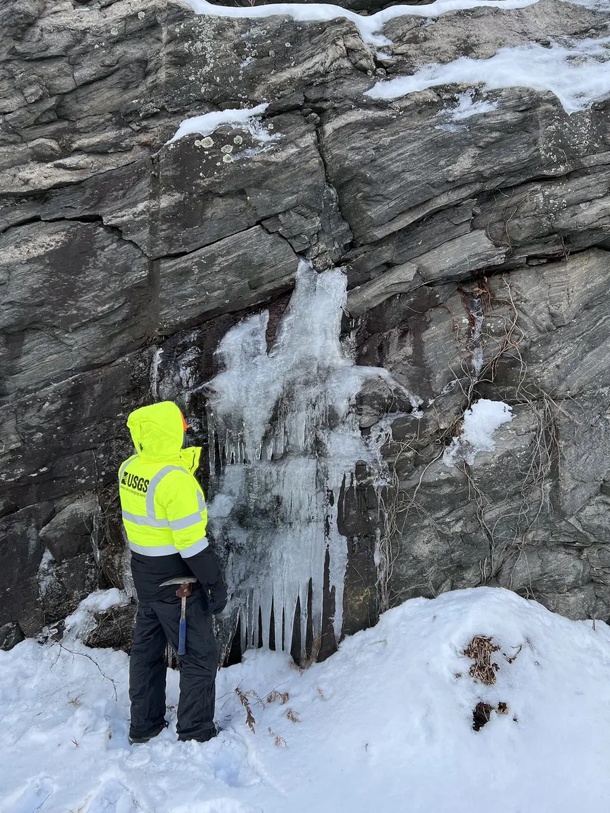

Rocks are not permanent objects. They are snapshots in a slow planetary recycling system driven by heat, pressure, water, weathering, erosion, melting, cooling, and plate tectonics.
Figure 8.1 · The Rock Cycle
Select a rock type to examine its formation pathway.
Earth's Dynamic System
MeltingCoolingHeat + pressureWeathering
Field Evidence · Photo Essay
The cycle in the real world
The rock cycle is usually too slow to watch from beginning to end, but each stage leaves visible evidence. Compare active lava, cooled basalt, layered sediment, banded gneiss, and the work geologists do to read those clues.

Molten rock at the surfaceLava from Kīlauea’s 2018 eruption begins the transition toward new igneous rock.USGS · Public domain

Cooling leaves a patternBasalt contracts as it cools, producing the striking columns seen at Yellowstone.USGS · Public domain

Layers record depositionSuccessive deposits compact and cement into visible sedimentary strata.USGS · Public domain

Pressure rearranges mineralsThe light and dark bands in gneiss preserve evidence of intense metamorphism.USGS · Public domain

Reading the rock recordA USGS geologist examines fractures in gneiss during field mapping in New Hampshire.USGS · Public domain
All photographs are locally hosted copies of works explicitly identified as public domain by the U.S. Geological Survey. Source links provide full descriptions and original credits.
What Is the Rock Cycle?
The rock cycle is the set of processes that transform rocks from one type into another. It does not move in only one direction. Igneous rock can weather into sediment, sedimentary rock can metamorphose, metamorphic rock can melt, and any exposed rock can be broken down by weathering and erosion.
The cycle is powered by two main engines: Earth's internal heat, which drives melting, metamorphism, and plate tectonics; and solar energy plus gravity, which drive weathering, erosion, transport, and deposition at the surface.
Cooling
Magma or lava solidifies into igneous rock.
Weathering
Rock breaks into sediment through water, ice, wind, roots, and chemistry.
Compaction
Buried sediments squeeze together and cement into sedimentary rock.
Metamorphism
Heat and pressure change rock without fully melting it.
Igneous Rocks
Igneous rocks form when molten rock cools. If magma cools slowly underground, large crystals can grow, as in granite. If lava cools quickly at the surface, crystals are small or glassy, as in basalt or obsidian.
Sedimentary Rocks
Sedimentary rocks form from particles, minerals, shells, or dissolved material deposited in layers. Over time, pressure compacts the layers and minerals cement the grains together. Sandstone, limestone, and shale are common examples.
Metamorphic Rocks
Metamorphic rocks form when existing rock is changed by heat, pressure, or chemically active fluids. Limestone can become marble; shale can become slate; granite can become gneiss.
Why Plate Tectonics Matters
Plate boundaries act like rock-cycle machines. At divergent boundaries, magma rises and forms new igneous crust. At convergent boundaries, rocks are buried, squeezed, metamorphosed, melted, and recycled into volcanoes. Mountain building lifts rocks high enough for weathering to attack them.
Big idea: A rock's type tells a story about the environment where it formed.
Field Clues
Crystals: often point to igneous or metamorphic formation.
Layers: often indicate sedimentary deposition.
Foliation: bands or sheets from pressure in metamorphic rock.
Fossils: usually found in sedimentary rock.
Practice Check
Class Challenge
Choose a rock sample or photo. Identify three clues: texture, layering or foliation, and possible minerals. Then explain the rock-cycle path that could have produced it.